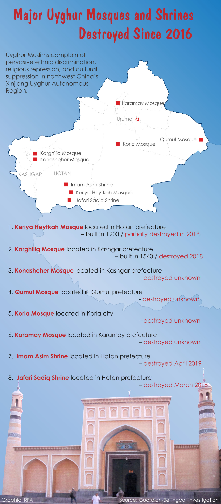
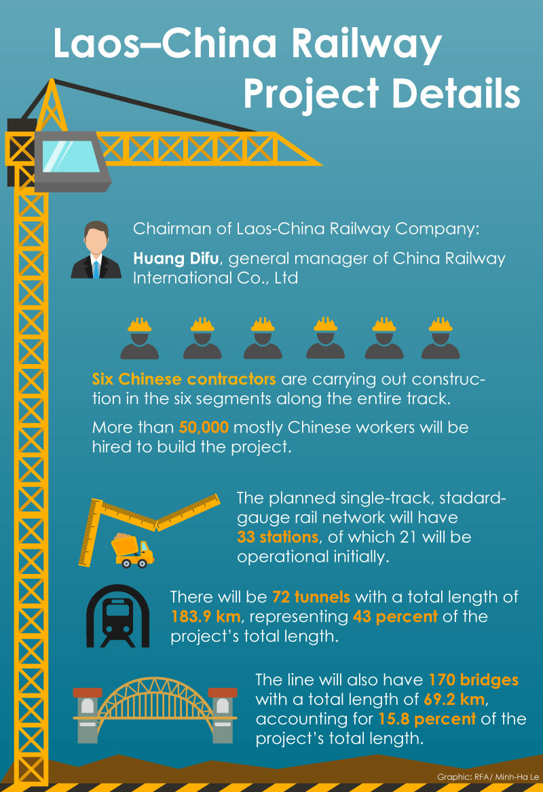

Inforgraphic - Designing Clarity from Complexity
As a graphic designer, I transform dense data and sensitive global issues into clear, accessible visuals. Using tools like Adobe Creative Suite, Figma, and data-driven research, I craft infographics that balance accuracy with visual storytelling. From concept sketch to final layout, my process focuses on distilling key insights, selecting impactful typography and color, and guiding viewers through complex narratives with empathy and precision.


5 People Identified in the Iconic Photo of Uyghur Detainees in Xinjiang
This Radio Free Asia (RFA) infographic reveals the human stories behind one of the most widely shared images of Uyghur detainees in Xinjiang. Through investigative reporting and community interviews, RFA identified five men photographed inside the Lop County detention camp each with distinct personal backgrounds but all swept into China’s mass detention of Uyghurs and other Muslim minorities.
Portraits and brief bios spotlight their lives before arrest a medical equipment entrepreneur, a carpenter-mosque caretaker, a restaurant owner, a driver, and a jade trader. None were linked to anti-government activity, but many were reportedly targeted for religious practice or independent thought. The design contrasts close-up profiles with the wide camp photo, reinforcing the scale of detention while centering individual identities.
By combining investigative detail with clear visual storytelling, the graphic turns an anonymous crowd into named individuals, underscoring the human cost of Xinjiang’s political “re-education” campaign.

Mapping the Destruction of Uyghur Mosques and Shrines
This infographic documents the systematic erasure of Uyghur religious heritage across northwest China’s Xinjiang Uyghur Autonomous Region. Drawing on a Guardian–Bellingcat investigation, it pinpoints eight historically significant mosques and shrines that were demolished or severely damaged since 2016.
Sites like the 13th-century Keriya Heytkah Mosque and the 16th-century Karghiliq Mosque, once central to Uyghur cultural life, are marked on a regional map alongside dates of destruction.
The design combines a clean map with a chronological site list, making it easy to grasp both geographic scale and historical loss. The stark red typography for “destroyed” dates emphasizes the urgency and gravity of the campaign, while the photograph of a traditional mosque at the bottom grounds the data in lived cultural heritage.
By merging investigative data with visual clarity, the graphic reveals how a policy of religious repression translates into the physical disappearance of centuries-old landmarks, reinforcing broader concerns over cultural suppression and human rights abuses in Xinjiang.

Laos Marks 40 Years of Communist Rule
This infographic commemorates the 40th anniversary of the Lao People’s Revolutionary Party’s rise to power, illustrating the country’s economic progress, political challenges, and regional ties. Using a clean circular layout, it organizes key facts into categories such as history, economic improvements, debt-to-GDP ratios, and infrastructure investments, while balancing government claims of stability with criticism of human rights restrictions.
Highlights include Laos’s milestones of joining ASEAN (1997) and the World Trade Organization (2013), a decline in debt-to-GDP from over 51% to 44%, and the multi-billion-dollar railway project linking Laos to China. The visual contrasts gains in peace and economic growth with ongoing concerns about one-party rule, Vietnamese influence, and Chinese financing.
By combining maps, charts, and concise text, the graphic distills four decades of political and economic transformation into an accessible snapshot, showing how Laos navigates modernization while remaining tightly bound to its communist allies and constrained by debt and limited freedoms.

Laos–China Railway Project Details
This infographic breaks down key statistics of the massive Laos–China railway construction, offering a clear snapshot of scale, workforce, and engineering demands. It highlights the leadership of Huang Difu, general manager of China Railway International, and notes that six Chinese contractors are responsible for building the line across six segments. Over 50,000 workers, primarily from China, are employed on the project, underscoring the depth of Chinese involvement.
The visual uses icons and bold numbers to convey the railway’s ambitious scope: a single-track network with 33 stations (21 opening initially), 72 tunnels stretching 183.9 km—43% of the total length and 170 bridges covering 69.2 km, or nearly 16% of the route. These details underscore the project’s engineering complexity and strategic significance for regional connectivity.
By combining concise text with construction-themed graphics, the design communicates both the technical scale and the geopolitical weight of a project that will reshape Laos’s infrastructure and deepen its economic ties to China.